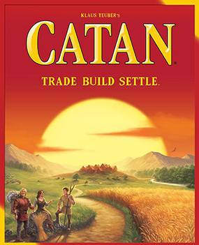

Další obrázky
Osadníci z Katanu
Die Siedler von Catan
1 099 CZK Hodnocení: 10.0/10 (BGG: 7.1/10)
Hráči se ujímají rolí osadníků na nově objeveném ostrově Katan. Budováním osad, měst a cest získávají suroviny, se kterými obchodují, aby jako první dosáhli 10 vítězných bodů.
Autor: Klaus Teuber
Vydavatel: Albi
Rok vydání: 1995
Věk: 10+
Hráči: 3-4
Doba: 1-1.5hod
Kategorie:
StrategickáRodinnáObchodovací
Mechaniky:
ObchodováníStavění sítěHázení kostkouModulární herní plán
Komponenty:
- Karty surovin (95 ks, Karty)
- Karty vývoje (25 ks, Karty)
- Hranice moře (6 ks, Desky)
- Šestiúhelníkové díly krajiny (19 ks, Desky)
- Herní figurky (města, vesnice, cesty) (96 ks, Figurky)